Examples#
This gallery walks through every public feature of chemistrykit.quantum:
particle-in-a-box models (with the free-electron model of conjugated-dye
color); the quantum harmonic oscillator compared against the exact Morse
potential; the rigid rotor; hydrogen-like orbitals; Huckel molecular-orbital
theory and its aromaticity rule; a minimal variational treatment of H2+;
and Rayleigh-Schrodinger perturbation theory for the anharmonic oscillator.
Each script in this gallery is self-contained and can be run directly with
python examples/quantum/<section>/<script>.py. Every script also
carries an RST module docstring as its title/description and uses # %%
markers to split narrative text from code, which is exactly what
Sphinx-Gallery renders into the pages below – the script is the source of
truth for what you see, not a copy of it.
Sections#
particle_in_box – 1D/3D particle-in-a-box energy levels and wavefunctions, and Kuhn’s free-electron model of a conjugated dye’s UV-Vis absorption wavelength.
harmonic_oscillator – the quantum harmonic oscillator’s evenly spaced vibrational levels, compared against the exact (anharmonic) Morse-potential levels for the same force constant.
rigid_rotor – rigid-rotor rotational energy levels, degeneracies, and the evenly spaced microwave absorption spectrum they predict.
hydrogenlike – hydrogen-like radial wavefunctions, radial distribution functions, and orbital energies for 1s/2s/2p/3d.
huckel – Huckel molecular-orbital theory for butadiene and benzene: building and diagonalizing the secular matrix, and checking Huckel’s 4n+2 aromaticity rule against the computed spectrum.
hartree_fock – a minimal 2-Gaussian LCAO variational treatment of H2+: solving
HC=SCEand variationally optimizing the orbital exponent to improve on a naive guess.perturbation – Rayleigh-Schrodinger perturbation theory for the quartic anharmonic oscillator, checked against exact numerical diagonalization in a truncated basis.
Harmonic oscillator vs. Morse potential#
The quantum harmonic oscillator’s perfectly evenly spaced vibrational levels, compared against the exact (anharmonic) Morse-potential levels for the same force constant – showing how real bonds’ level spacing shrinks toward dissociation.
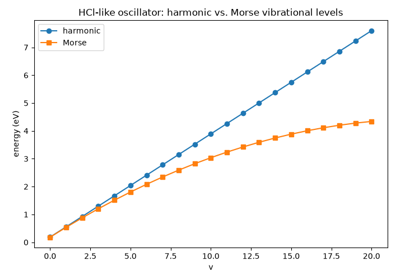
Harmonic vs. Morse vibrational levels: anharmonicity toward dissociation
Minimal variational H2+ and the LCAO method#
The one-electron H2+ molecular ion in a small Gaussian basis: LCAO
bonding and antibonding orbitals, bonding density, the Born-Oppenheimer
potential curve, Gaussian-type orbital integrals, the Roothaan-Hall
secular equation HC=SCE, and the shared electron pair.
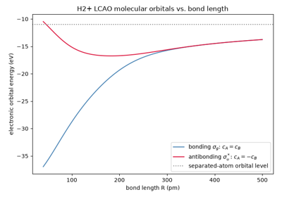
Hund-Mulliken LCAO molecular orbitals of H2+: bonding and antibonding
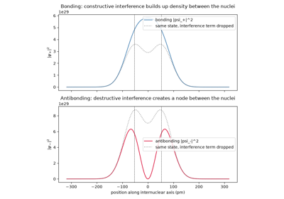
Heitler-London’s insight: bonding vs. antibonding electron density
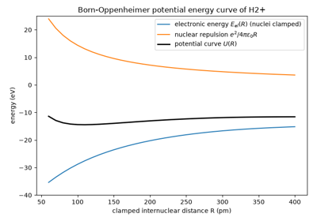
Born-Oppenheimer clamped-nuclei potential curve of H2+
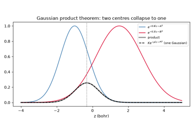
Boys’s Gaussian-type orbitals and the Gaussian product theorem
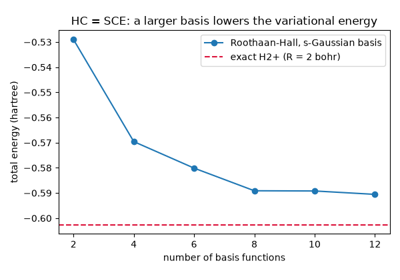
Roothaan-Hall equations: solving HC = SCE in a finite basis
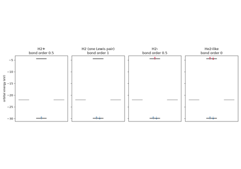
Lewis’s shared electron pair: two opposite-spin electrons in one bonding orbital
Variational helium atom#
The Kellner-Hylleraas effective-nuclear-charge treatment of helium and its two-electron isoelectronic ions: electron screening from the variational principle.
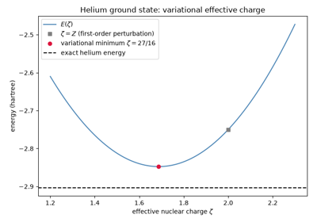
Kellner and Hylleraas: the variational helium atom and its screened charge
Huckel molecular-orbital theory#
Huckel pi-electron theory for conjugated molecules: the 4n+2 aromaticity rule checked against computed spectra, resonance (delocalization) energies, the Coulson and Frost-circle closed forms, and Fukui’s frontier-orbital reactivity index.
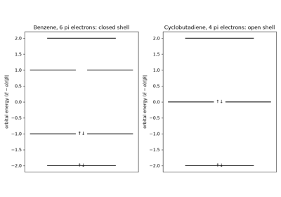
Huckel’s 4n+2 aromaticity rule from the computed pi spectrum
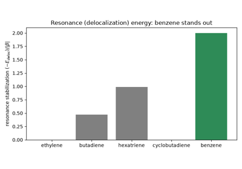
Pauling’s resonance energy as Huckel delocalization energy
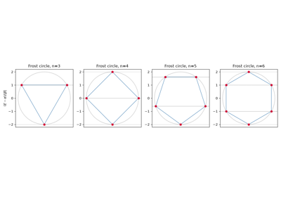
Coulson’s polyene formula and the Frost circle
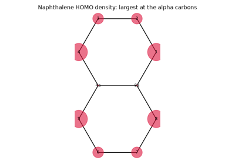
Fukui’s frontier orbitals: why naphthalene reacts at the alpha position
Hydrogen-like atoms#
Hydrogen-like radial wavefunctions, radial distribution functions, and orbital energies for 1s/2s/2p/3d, plus the exact ground-state ionization energy.
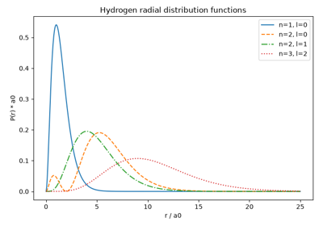
Schrodinger’s hydrogen atom: radial wavefunctions and orbital energies
Particle in a box#
1D/3D particle-in-a-box energy levels and wavefunctions, cubic-box degeneracy, and Kuhn’s free-electron model of a conjugated dye’s UV-Vis absorption wavelength.
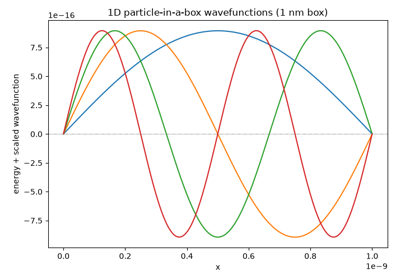
Solving Schrodinger’s equation for a particle in a box
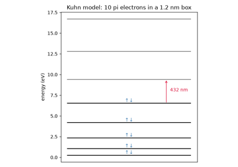
Kuhn’s free-electron model of conjugated dye color
Rayleigh-Schrodinger perturbation theory#
First-order perturbation theory for the quartic anharmonic oscillator, checked against exact numerical diagonalization of the full Hamiltonian in a truncated harmonic-oscillator basis.
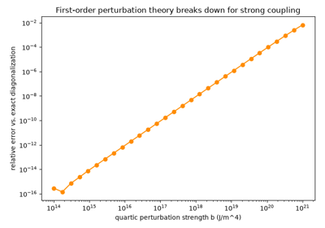
Rayleigh-Schrodinger perturbation theory vs. exact diagonalization for the quartic oscillator
Rigid rotor#
Rigid-rotor rotational energy levels, their (2J+1) degeneracy, and the evenly spaced microwave absorption spectrum they predict for a diatomic molecule.
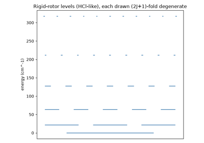
Dennison’s rigid rotor: rotational levels and the microwave spectrum